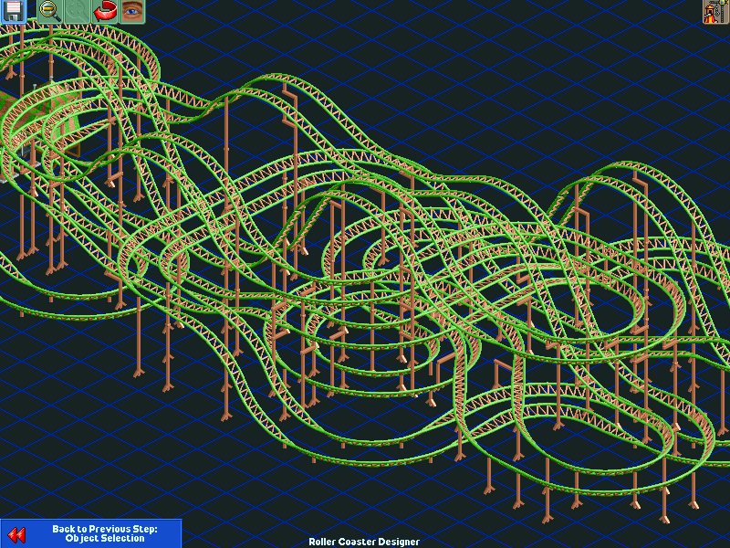
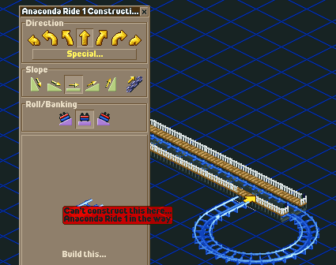
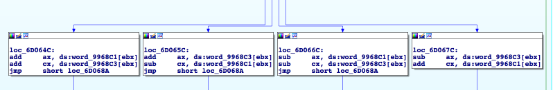

What sounds really cool and you want to know more about?
What should I skip through
Please interrupt me
Goal - Build cool coasters via computer program
Goal - Build cool coasters via computer program
How do you interface with the game?
How do you interface with the game?
Tracks are stored separately
Plan of action:
Generate tracks outside of the game
Save to the RCT track format
Load in the game
...
Profit
What is a cool coaster?

High Excitement/Low Sickness
High Excitement/Low Sickness Cont'd
Track needs to be a complete circuit!
Track can't collide with itself

Car needs to make it around the track
How to represent track data?
Track Data (cont'd)
x86 Source Code
4,862,557 instructions
~1,289,635 bytes of data
No labels!
What is assembler?
8 Registers
What is assembler cont'd
What is assembler cont'd
How do you find what you are looking for?
OpenRCT2
Cross platform support! (via SDL2)
Better game AI!
Cheats!
Languages (CN, FR, NL, ES, PO, HU, more)
Janitor unionization
NB: you still need the game assets
How does it work?
CPU starts execution at an entry point specified by ABI
Compile game, C into shared DLL
Modify game's rct2.exe to point to the C entry point
Distribute new .exe
You can drop into assembler from C
Call subroutines
Finding Game Data - 2 Objectives
Find the track data
Find the ratings
IDA Pro
IDA (cont'd)
Where Is Anything
Track Data Has Consistent Order
Track Formula
Good enough to make guesses
Guessing Track Data
Guessing Track Data (cont'd)
Guessing Track Data (cont'd)
A Good Guess
A Good Guess
A Good Guess (cont'd)
A Good Guess (cont'd)
A Good Guess (cont'd)

A Good Guess (cont'd)
Rating Data
Rating Data
Rating Data
Rating Data
Rating Jump Table
So what is "excitement"?
Excitement
Excitement (cont'd)
Intensity
Okay! Time to build an algorithm.
You Might Be Vulnerable If...
Mobile apps that use DNS to connect to an API
Client libraries that use DNS to connect to an API
Your service uses DNS to connect to third party API's (Stripe, Mailchimp...)
DNS Resolver is Down - Workarounds
Use multiple resolvers
Internally, connect directly to IP addresses instead of DNS
Set shorter timeout in /etc/resolv.conf
If you don't get a response, ignore TTL
DNS Provider is Down - Workarounds
Maintain DNS records at two hosts
Reference both in nameserver list
Timeouts
When something is taking too long, you abandon it
Your users have a timeout, whether your system does or not
Outside In
Setting Timeouts - 2 Questions
What's the maximum acceptable response time?
How long can my service afford to spend processing requests?
Hard Math Stuff
Thread pool with 100 workers
Each request takes 1 second. 20 requests come in per second.
Downstream server is slow, requests take 6 seconds each
Set timeout to prevent this
Fail early if you can't serve a request
Socket Timeouts Are Liars
Slow Read
Remote Server Unreachable
Why 18 Seconds?
HAProxy
retries is the number of times a connection attempt should be retried on
a server when a connection either is refused or times out. The
default value is 3.
Timeouts
One Timeout Value = set on both Connect/Read
Separate Connect Timeout
Not available in the standard library!
Timeouts - Workarounds
*Set timeouts*
Set shorter, separate, connect timeout
Know how your HTTP client behaves
Timeouts - Wall Clock Timeout
Timeouts - Measure
Retries
Retries - Temporal Failures
Retries - Single Component Failures
Exponential Backoff
1, 2, 4, 8...
Exponential Backoff with Jitter
1.01, 2.03, 3.9, 8.2...
When can you retry?
Idempotence
Idempotent Actions
Retrieving a profile
Setting user's email to foo@bar.com
Emptying a bank account
Idempotent Requests
You can always retry idempotent actions!
Not Idempotent
Sending an email
Charging a credit card
When can you retry?
Not Idempotent Requests
You can retry if the data never made it (connection timeout, connection error)
Not Idempotent Requests
Determining whether the data made it is hard
Not Idempotent Requests
You can retry if you get a 429 or a 503 (carefully!)